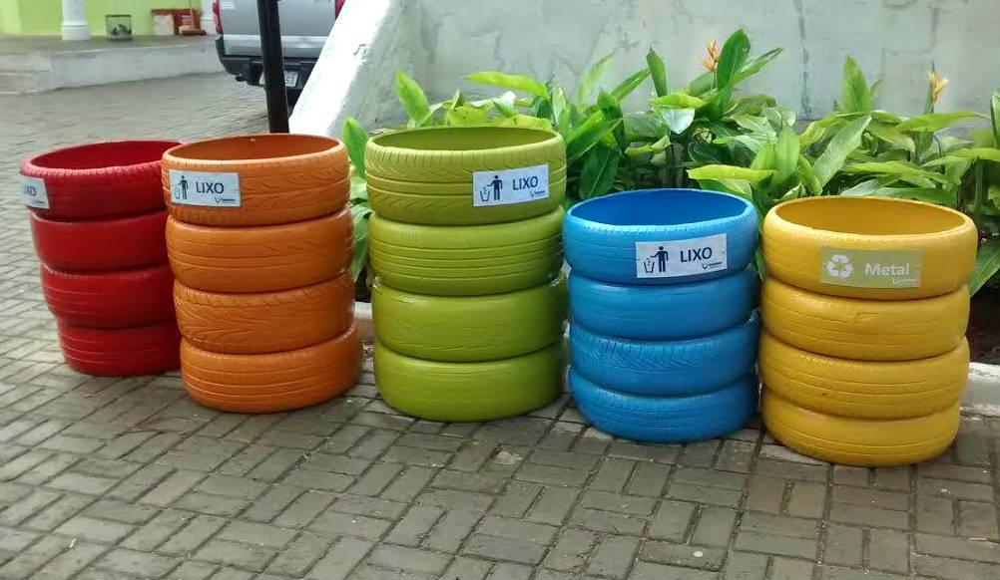
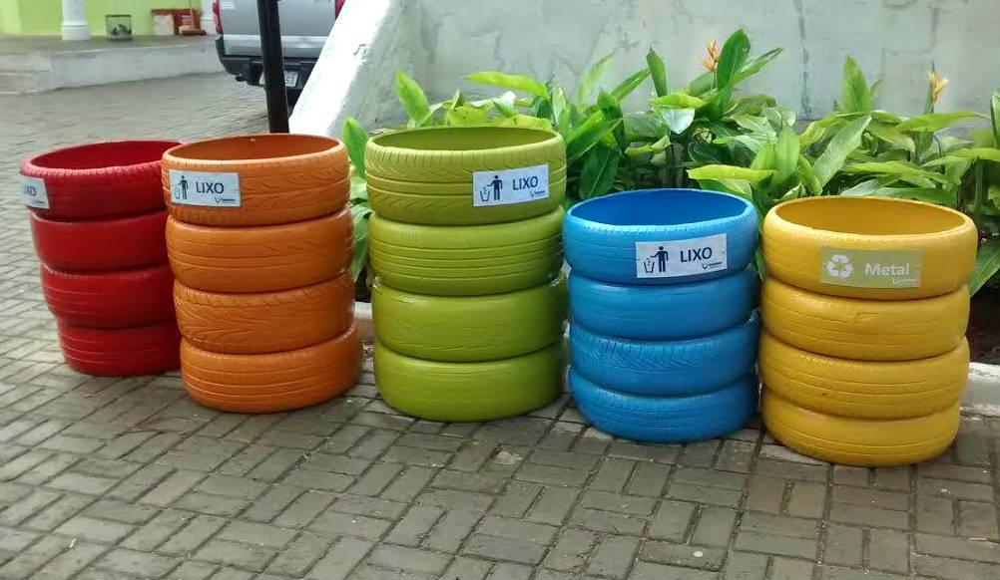

Sobre o Projeto
O projeto EcoImpacto, criado por alunos da faculdade Ceunsp, tem como objetivo oferecer um site informativo acessível para todas as idades, abordando de forma prática e interativa como a reciclagem pode fazer parte do dia a dia de cada pessoa.
Queremos apresentar conteúdos dinâmicos e envolventes, proporcionando uma leitura leve e educativa que facilite a compreensão e torne o aprendizado agradável.

 
